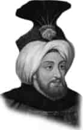

II. MUSTAFA
Annesi : Emetullah Rabia Gülnüş Sultan
Doğumu : 5 Haziran 1664
Vefatı : 29 Ocak 1704
Saltanatı : 1695 - 1703 (8 yıl)
II. Mustafa, İstanbul’da dünyaya geldi. Kuvvetli bir ilim tahsili yaptı. Tahta geçtiğinin III. günü yapacağı işleri anlatan bir yazı neşretti. Yazısında: “Zevk, sefa ve rahatı kendimize haram eylemişizdir.” diyordu.
Yine vezirlerinden birine yazmış olduğu yazı şöyledir: “Bana ağırlık ve hazine lâzım değil. Yerine göre kuru ekmek yerim. Vücudumu din uğruna harcarım. Sıkıntının her çeşidine sabrederim. Milletime hizmet tamam olmadıkça, seferden dönmem. Elbette sefere bizzat kendim giderim.”
Devrinde Sakız Adası yeniden alındı. Çok kıymetli deniz zaferleri kazanıldı. 1695’de Lugoş Zaferi kazanıldı. Rus Çarı Büyük Petro Azak’ta hezimete uğratıldı. Fakat bir yıl sonra Azak düştü. 1696’da Azak Kalesi’ndeki beş yüz asker yüz binlik Rus ordusuna iki ay dayandı. Almanlara karşı Olaş Zaferi kazanıldı. Lehistan, Alman ve Venedik cephelerinde büyük ve kesin başarılar kazanıldı. Fakat Zenta Bozgunu diye tarihe geçen ve otuz bin Türk askerinin şehadetiy-le neticelenen üzücü olay bu devirde meydana geldi. 1699’da Karlofça Antlaşması yapıldı. 1703’te İstanbul’da isyan oldu. İsyan büyüdü ve II. Mustafa tahttan indirildi. Dört ay sonra da vefat etti. Vefatında otuz dokuz yaşında idi. İstanbul’da Yeni Cami yanındaki türbesine gömüldü.
Erkek çocukları: I. Mahmut, III. Osman, III. Ahmet, Küçük Ahmet, Hüseyin, Selim, Mehmet, Murat, Osman.
Kız çocukları: Ümmü Gülsüm, Ayşe, Emetullah, Emine, Rukiye, Safiye, Zahide, Atike, Fatma, Zeynep, Zahide.